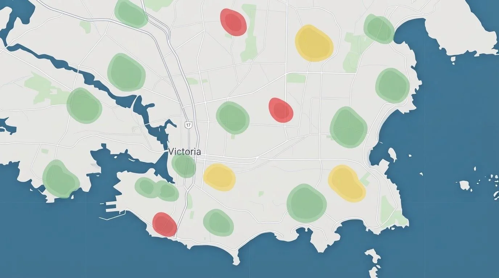
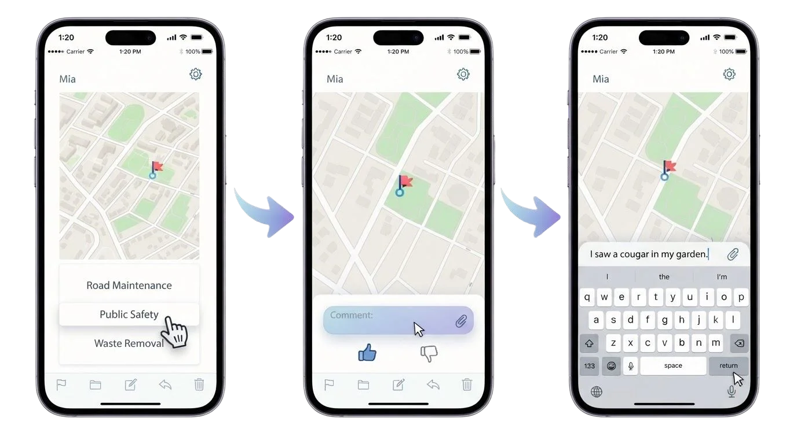
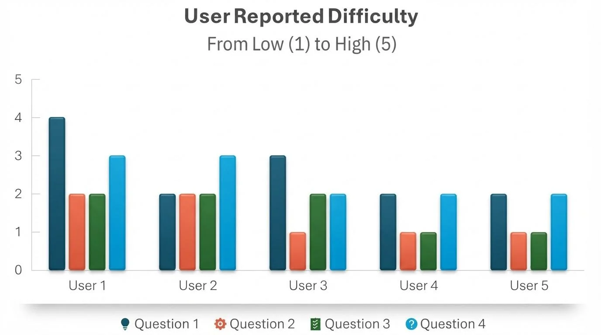

Bright Maps
Social-sourced data: mapping community needs
- Role
- Team Member
- Timeline
- Sept - Dec 2024
- Tools
- Figma
- Team
- Team of 3

Problem
Poor local services, such as late trash pickup, unmaintained roads, and weak public safety, frustrate residents and lower their quality of life.
Goal
A user-friendly platform where residents collectively vote on how well local services perform.
Research
I reviewed similar interfaces, including crisis-mapping tools and government social media, then tested Figma prototypes with general and expert users.
Findings:
- Some users struggled with navigation and needed clearer guidance
- The wireframes worked for a broad audience and felt simple
- Visual layout and polish affected how usable the app felt
- Expert users grasped the system quickly, which validated advanced features
Process
Based on testing, we made these changes:
- Simplified navigation and added contextual tooltips for less tech-savvy users
- Added a functional reporting feature and a user feedback mechanism
- Unified the visual style for consistency
- Made the interface fully responsive for mobile and desktop
- Added customization options
Final design

Outcome
Five users rated task difficulty from 1 (low) to 5 (high). Nineteen of 20 ratings were 3 or lower.
- Flagging an area was slightly too difficult, so that flow needs another look
- All users enjoyed the task; one called it an interesting use of social data, and one said they would not use the app personally
